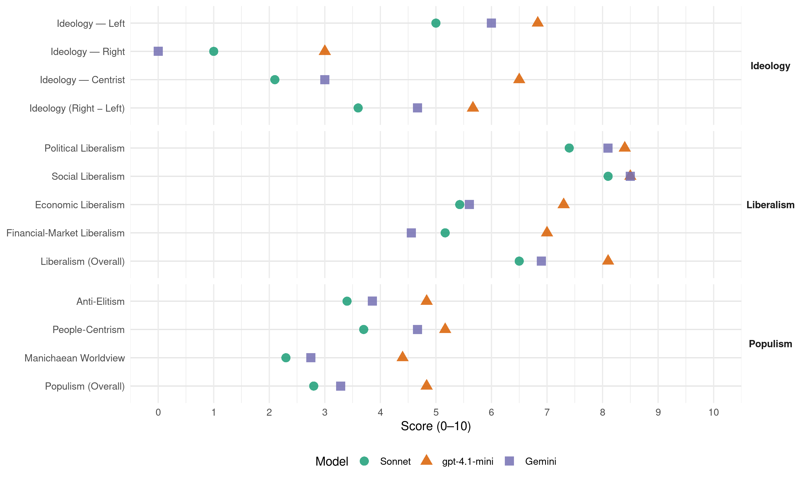

PSOE (Spain, 2016)
manifesto_id 33320_201606
Get full text: This site shows derived annotations and short verbatim quotes only. The full manifesto text is © Manifesto Project / WZB — obtain it via manifesto-project.wzb.eu using the manifesto_id above.
Headline scores
| Dimension | Sonnet | gpt-4.1-mini | Gemini |
|---|---|---|---|
| Populism (Overall) | 2.8 | 4.8 | 3.3 |
| Anti-Elitism | 3.4 | 4.8 | 3.9 |
| People-Centrism | 3.7 | 5.2 | 4.7 |
| Manichaean Worldview | 2.3 | 4.4 | 2.8 |
| Ideology (Right − Left) | 3.6 | 5.7 | 4.7 |
| Liberalism (Overall) | 6.5 | 8.1 | 6.9 |
| Political Liberalism | 7.4 | 8.4 | 8.1 |
| Social Liberalism | 8.1 | 8.5 | 8.5 |
| Economic Liberalism | 5.4 | 7.3 | 5.6 |
| Financial-Market Liberalism | 5.2 | 7.0 | 4.6 |
Evidence per dimension
Economic Liberalism
Gemini · score 7.0 · verified · chunk 1
“el mercado tiene que funcionar libremente”
El mercado tiene que funcionar libremente, hay que dejar vía libre al talento y la iniciativa privada, a la competencia
Gemini · score 6.0 · verified · chunk 2
“dinamicen y acompañen a las inversiones privadas”
basada en medidas que dinamicen y acompañen a las inversiones privadas y que sean selectivas
Gemini · score 5.0 · verified · chunk 3
“la excelencia empresarial y la mejor contribución”
haciendo compatible la garantía en la prestación del servicio, la excelencia empresarial y la mejor contribución a la creación de empleo.
Gemini · score 7.0 · verified · chunk 4
“reforzar la competencia empresarial”
reglas de juego para reforzar la competencia empresarial, la buena gestión de las empresas
Gemini · score 6.0 · verified · chunk 5
“conservar al mismo tiempo las libertades económicas”
para asegurar el derecho al trabajo y conservar al mismo tiempo las libertades económicas y la economía de mercado
Gemini · score 7.0 · verified · chunk 6
“mercados abiertos, competitivos y bien regulados”
Fomentar las políticas activas de comunicación y consulta por parte de los entes públicos y sus grupos de interés, yendo más allá de los requisitos legales establecidos para generar credibilidad y confianza. Mercados abiertos, competitivos y bien regulados Una economía más democrática e inclusiva requiere de un marco institucional adecuado
Gemini · score 7.0 · verified · chunk 7
“promover el funcionamiento eficiente de los mercados”
necesarias para promover el funcionamiento eficiente de los mercados, la competencia efectiva y el impulso de la
Gemini · score 4.0 · verified · chunk 8
“regular la participación de la industria farmacéutica”
Igualmente se deberá regular la participación de la industria farmacéutica en el sostenimiento del sistema avanzando en una responsabilidad social corporativa
Gemini · score 4.0 · verified · chunk 9
“La liberalización del suelo y la política del todo urbanizable”
La liberalización del suelo y la política del todo urbanizable puestas en marcha por el Gobierno del PP en 1998
Gemini · score 3.0 · verified · chunk 10
“mercado de trabajo desregulado”
consideran que, al fin y al cabo, es el mercado de trabajo desregulado el que debe, en relación con sus inputs, gestionar centralmente la inmigración
gpt-4.1-mini · score 7.0 · verified · chunk 1
“mercado y la iniciativa privada son fuerzas extraordinarias de desarrollo”
No aspiramos a acabar con la economía de mercado, pero sí a reformarla, a embridarla, a ponerla al servicio de un orden social justo. Nuestras reformas son compatibles con el funcionamiento de la economía de mercado, reconocemos que el mercado y la iniciativa privada son fuerzas extraordinarias de desarrollo, pero es necesario encauzar esas fuerzas y someterlas a un ideal de progreso.
gpt-4.1-mini · score 7.0 · verified · chunk 2
“la innovación es un factor clave para la mejora de la competitividad”
De hecho la innovación es un factor clave para la mejora de la competitividad, a la que puede contribuir mediante la provisión de nuevos o mejorados productos o servicios y, a través de su producción, mediante procesos nuevos o mejorados, que añaden valor, incrementando la demanda o la productividad.
gpt-4.1-mini · score 7.0 · verified · chunk 3
“un modelo de financiación pública suficiente que pueda complementarse con las aportaciones de pequeña cuantía”
La reforma de la financiación de los partidos no solo es un medio para la prevención de la corrupción, sino que debe servir también para la reconstrucción del vínculo de identificación y de confianza entre la ciudadanía y los partidos. En este sentido, apostamos por un modelo de financiación pública suficiente que pueda complementarse con las aportaciones de pequeña cuantía provenientes de personas físicas.
gpt-4.1-mini · score 7.0 · verified · chunk 4
“maximizar el crecimiento económico mediante la mejora de la productividad de nuestra economía”
Superar la crisis económica exige maximizar el crecimiento económico mediante la mejora de la productividad de nuestra economía pero garantizando también una redistribución de los frutos de ese crecimiento que reduzca las desigualdades.
gpt-4.1-mini · score 8.0 · verified · chunk 5
“apostar por la diversificación de las fuentes de financiación de las empresas, sobre todo de las PYMES”
Es necesario apostar por la diversificación de las fuentes de financiación de las empresas, sobre todo de las PYMES. Debemos crear el marco que permita impulsar vías de financiación alternativas, convergiendo hacia las pautas europeas de financiación, más equilibradas.
gpt-4.1-mini · score 7.0 · verified · chunk 6
“simplifique nuestro sistema tributario, haciéndolo más eficiente”
…Necesitamos una nueva política fiscal que, simplifique nuestro sistema tributario, haciéndolo más eficiente y que promueva la transición hacia un nuevo modelo económico, incentivando la inversión productiva, el emprendimiento y la innovación, frente a otro tipo de actividades, que deben ser desincentivadas como la especulación…
gpt-4.1-mini · score 8.0 · verified · chunk 7
“promover la coordinación de la legislación sobre horarios comerciales con las Comunidades Autónomas”
Promover la coordinación de la legislación sobre horarios comerciales con las Comunidades Autónomas y los Ayuntamientos, para adaptarla a los nuevos tiempos y formas de consumo; y eliminando restricciones injustificadas al establecimiento y a los horarios de apertura siempre dentro del estricto cumplimiento de la legislación laboral.
gpt-4.1-mini · score 8.0 · verified · chunk 8
“La sanidad pública será un ámbito prioritario para el aumento de la inversión”
El Sistema Nacional de Salud tiene una insuficiente financiación. Por ello, en la reforma fiscal que promoverá el PSOE la sanidad pública será un ámbito prioritario para el aumento de la inversión.
gpt-4.1-mini · score 7.0 · verified · chunk 9
“la promoción comercial de nuestras empresas y la inversión extranjera”
España debe defender sus intereses en el exterior, los de sus empresas y el conjunto de la sociedad civil, mediante la aplicación eficiente de sus instrumentos de diplomacia económica y cultural, buscando una mayor sinergia y complementariedad externas de la política económica, energética, educativa, científica o cultural. La promoción comercial de nuestras empresas y la inversión extranjera deben vincularse especialmente a una apuesta por el talento.
gpt-4.1-mini · score 7.0 · verified · chunk 10
“la crisis ha debilitado cruelmente, más allá de la estructura económica y social”
…La crisis ha debilitado cruelmente, más allá de la estructura económica y social, el componente orgánico y demográfico del país…
Sonnet · score 5.0 · verified · chunk 1
“el mercado y la iniciativa privada son fuerzas extraordinarias”
reconocemos que el mercado y la iniciativa privada son fuerzas extraordinarias de desarrollo, pero es necesario encauzar esas fuerzas
Sonnet · score 6.0 · verified · chunk 2
“dinamicen y acompañen a las inversiones privadas”
basada en medidas que dinamicen y acompañen a las inversiones privadas y que sean selectivas, dirigiéndose a los sectores de carácter más estratégico
Sonnet · score 5.0 · verified · chunk 3
“Establecer las condiciones para facilitar que en la empresa”
Establecer las condiciones para facilitar que en la empresa se puedan implementar las normas de Responsabilidad Social Corporativa (RSC) que constituyen un valor competitivo
Sonnet · score 6.0 · verified · chunk 4
“mayor competencia en los mercados”
más ingresos públicos, un gasto público más eficiente, una mayor competencia en los mercados y una mayor productividad
Sonnet · score 5.0 · mixed · chunk 5
“libertad de circulación y establecimiento de los operadores económicos”
garantizar la igualdad de las condiciones básicas de ejercicio de la actividad económica en el ámbito de todo el país, así como la libertad de circulación y establecimiento de los operadores económicos, sea cual sea su procedencia
Sonnet · score 5.0 · mixed · chunk 6
“mercados abiertos y accesibles”
Unas instituciones reguladoras independientes y fuertes deben ser complementadas con mercados abiertos y accesibles. La protección por su interés social de numerosas profesiones y servicios ya no tienen más sentido que el impedir el desarrollo de la competencia
Sonnet · score 6.0 · verified · chunk 7
“Avanzar en la liberalización del acceso y ejercicio a los servicios profesionales”
Avanzar en la liberalización del acceso y ejercicio a los servicios profesionales, revisando todas las barreras de entrada y eliminando todas aquellas que no sean estrictamente justificadas.
Sonnet · score 5.0 · verified · chunk 8
“sector privado pueda desarrollar un rol complementario”
Mantener la titularidad pública de los hospitales y centros de salud y de los servicios sanitarios y clínicos que se prestan en los mismos, sin perjuicio de que el sector privado pueda desarrollar un rol complementario
Sonnet · score 5.0 · mixed · chunk 9
“liberalización del suelo y la política”
La liberalización del suelo y la política del todo urbanizable puestas en marcha por el Gobierno del PP en 1998, junto con la liberalización de las hipotecas
Sonnet · score 5.0 · verified · chunk 10
“mercado de trabajo desregulado”
consideran que, al fin y al cabo, es el mercado de trabajo desregulado el que debe, en relación con sus inputs, gestionar centralmente la inmigración
Financial-Market Liberalism
Gemini · score 4.0 · verified · chunk 1
“crear un Banco Público de Inversiones”
el PSOE considere que puede ser necesario crear un Banco Público de Inversiones que facilite el emprendimiento
Gemini · score 5.0 · verified · chunk 2
“mecanismos de desintermediación financiera que acerquen el capital”
Impulsar de una manera sostenida mecanismos de desintermediación financiera que acerquen el capital inversor a nuevos proyectos
Gemini · score 3.0 · verified · chunk 3
“malas prácticas de las entidades financieras”
devastadas por los efectos de la crisis económica que han sido desahuciadas o están en alto riesgo de serlo, por la actitud de las entidades financieras, que en muchos casos han actuado con malas prácticas
Gemini · score 7.0 · verified · chunk 4
“diversificación de las fuentes de financiación”
necesario apostar por la diversificación de las fuentes de financiación de las empresas, sobre todo de
Gemini · score 6.0 · verified · chunk 5
“desarrollando y fortaleciendo los mecanismos de financiación no bancaria”
fundamentalmente el ICO y; (3) desarrollando y fortaleciendo los mecanismos de financiación no bancaria. La dependencia de la
Gemini · score 4.0 · verified · chunk 6
“Impuesto a las Transacciones Financieras”
Promover la modificación de la normativa armonizada europea para que se puedan aplicar tipos reducidos a los libros, periódicos y revistas electrónicos o digitales, considerando su carácter cultural, así como a bienes de primera necesidad. Impulsar la puesta en marcha definitiva de un Impuesto a las Transacciones Financieras (ITF), tal y como ya han acordado once países de la Unión Europea, entre ellos España.
Gemini · score 6.0 · verified · chunk 7
“esquemas de protección de inversores y consumidores de servicios financieros”
Revisar y reforzar los esquemas de protección de inversores y consumidores de servicios financieros, para recuperar la confianza de los ahorradores
Gemini · score 3.0 · verified · chunk 8
“liberalización de las hipotecas (eliminando límites de tiempo”
La liberalización del suelo y la política del todo urbanizable puestas en marcha por el Gobierno del PP en 1998, junto con la liberalización de las hipotecas (eliminando límites de tiempo y de porcentajes de renta dedicados a la amortización)
Gemini · score 3.0 · verified · chunk 9
“la liberalización de las hipotecas (eliminando límites de tiempo y de porcentajes de renta”
La liberalización del suelo y la política del todo urbanizable puestas en marcha por el Gobierno del PP en 1998, junto con la liberalización de las hipotecas (eliminando límites de tiempo y de porcentajes de renta dedicados a la amortización)
gpt-4.1-mini · score 7.0 · verified · chunk 1
“lucha contra el fraude fiscal”
El Estado no puede seguir ignorando este grave problema y debe poner remedio a una política de laxitud con las empresas defraudadoras. Por otro lado, el sistema es poco eficiente en la recaudación y no responde a unos criterios mínimos de equidad, con una presión fiscal excesiva sobre los asalariados.
gpt-4.1-mini · score 7.0 · verified · chunk 3
“Reforzar el papel de control y fiscalización del Tribunal de Cuentas”
Reforzar el papel de control y fiscalización del Tribunal de Cuentas para auditar en tiempo real las cuentas de las organizaciones políticas, con una mayor capacidad sancionadora.
gpt-4.1-mini · score 6.0 · verified · chunk 4
“rescate de nuestras entidades bancarias encabezado por el Banco Central Europeo”
Cuando teníamos cerradas todas las fuentes de financiación externas, lo que nos llevó a una severa sequía de créditos que agudizó la crisis interna, el rescate de nuestras entidades bancarias encabezado por el Banco Central Europeo significó un punto de inflexión positivo.
gpt-4.1-mini · score 8.0 · verified · chunk 5
“reforzar como Banco Público el Instituto de Crédito Oficial (ICO) como instrumento de financiación de empresas y autónomos”
Asimismo, resulta necesario reforzar como Banco Público el Instituto de Crédito Oficial (ICO) como instrumento de financiación de empresas y autónomos, que les permite afrontar proyectos de inversión o sus necesidades de liquidez.
gpt-4.1-mini · score 6.0 · verified · chunk 6
“lucha contra el fraude fiscal”
…Incrementar en 5.000 empleados públicos los efectivos de la Agencia Estatal de la Administración Tributaria destinados a la lucha contra el fraude en los próximos cuatro años. Destinar al Presupuesto de la AEAT, para luchar contra el fraude fiscal, un porcentaje real y automático de la recaudación bruta derivada de los actos de liquidación y gestión recaudatoria…
gpt-4.1-mini · score 8.0 · verified · chunk 7
“Revisar y reforzar los esquemas de protección de inversores y consumidores de servicios financieros”
Revisar y reforzar los esquemas de protección de inversores y consumidores de servicios financieros, para recuperar la confianza de los ahorradores en los productos financieros. Proponemos la unificación de los servicios de reclamaciones y de protección de los tres supervisores financieros (banca, valores, seguros) a los que pueden acudir los clientes e inversores en única Autoridad de Protección Financiera y resolución de disputas.
Sonnet · score 4.0 · verified · chunk 1
“regular los flujos financieros”
estructuras de gobernanza supranacionales que permitan regular los flujos financieros y tomar medidas para que las economías de mercado sean sostenibles
Sonnet · score 6.0 · verified · chunk 2
“fondo de capital riesgo y capital nido”
Impulsar un acuerdo estable con el ICO que asegure la creación de un fondo de capital riesgo y capital nido dirigido entre otros a la modernización e internacionalización
Sonnet · score 5.0 · verified · chunk 3
“cláusulas abusivas en los productos bancarios”
en las jurisdicciones social y mercantil y luego en la civil como consecuencia de la reforma laboral del PP, de las ejecuciones de créditos hipotecarios, del endeudamiento familiar y de las cláusulas abusivas en los productos bancarios
Sonnet · score 6.0 · verified · chunk 4
“mercados de valores alternativos tanto para instrumentos de deuda”
Reforzar los mercados de valores alternativos tanto para instrumentos de deuda como de capital, dirigido a empresas medianas
Sonnet · score 5.0 · mixed · chunk 5
“recurso a los mercados de valores de renta variable”
El recurso a los mercados de valores de renta variable -que sí son utilizados habitualmente por las grandes empresas-, la emisión de bonos o títulos corporativos, los préstamos a través de fondos de inversión (direct lending)
Sonnet · score 4.0 · mixed · chunk 6
“Impuesto a las Transacciones Financieras (ITF)”
Impulsar la puesta en marcha definitiva de un Impuesto a las Transacciones Financieras (ITF), tal y como ya han acordado once países de la Unión Europea, entre ellos España. Defenderemos que el ITF sea un impuesto de base amplia
Sonnet · score 6.0 · verified · chunk 7
“Revisar y reforzar los esquemas de protección de inversores”
Revisar y reforzar los esquemas de protección de inversores y consumidores de servicios financieros, para recuperar la confianza de los ahorradores en los productos financieros.
Sonnet · score 4.0 · verified · chunk 8
“prácticas comerciales abusivas incluidas las bancarias”
Mejorar la protección de los consumidores especialmente de las personas mayores más vulnerables, ante prácticas comerciales abusivas incluidas las bancarias, financieras y de aseguramiento
Sonnet · score 4.0 · mixed · chunk 9
“mejor regulación de las finanzas internacionales”
Consolidar nuestra participación en el G-20 para desde ese foro solicitar una mejor regulación de las finanzas internacionales y una mayor coordinación contra los paraísos fiscales
Political Liberalism
Gemini · score 8.0 · verified · chunk 1
“hacer respetar la división de poderes”
reducir el número de aforados en España, para hacer respetar la división de poderes y poder contar con instituciones
Gemini · score 8.0 · verified · chunk 2
“democracia representativa es la mejor opción”
Defendemos que la democracia representativa es la mejor opción para una sociedad contemporánea
Gemini · score 9.0 · verified · chunk 3
“garantiza el pluralismo político, uno de los valores”
reconoce a los partidos políticos como las instituciones a través de las cuales se garantiza el pluralismo político, uno de los valores superiores de nuestro ordenamiento
Gemini · score 8.0 · verified · chunk 4
“supervivencia de la democracia”
fundamental para la supervivencia de la democracia. Por ello, el Estado debe actuar
Gemini · score 7.0 · verified · chunk 5
“hacer realidad el Estado de Derecho”
UNA INSPECCIÓN DE TRABAJO CENTRADA EN HACER REALIDAD EL ESTADO DE DERECHO EN LOS CENTROS DE TRABAJO
Gemini · score 8.0 · verified · chunk 6
“recurso planteado por el PSOE”
llevaremos a cabo una revisión de la ley de Costas aprobada por el Partido Popular que ha sido declarada parcialmente nula por el Tribunal Constitucional tras el recurso planteado por el PSOE.
Gemini · score 8.0 · verified · chunk 7
“en sede parlamentaria con las siguientes mejoras”
organismos reguladores, que se residenciará en sede parlamentaria con las siguientes mejoras: convocatoria pública de las vacantes
Gemini · score 8.0 · verified · chunk 8
“derecho fundamental en la Constitución el derecho a la protección”
3. PROPUESTAS Reconocer como derecho fundamental en la Constitución el derecho a la protección de la salud.
Gemini · score 8.0 · verified · chunk 9
“nuestros valores de paz, democracia, progreso”
En primer lugar, porque nuestros valores de paz, democracia, progreso o sostenibilidad no se agotan en las fronteras
Gemini · score 9.0 · verified · chunk 10
“Estado social y democrático de Derecho”
Nuestra obligación moral y humana es restablecer la realidad de una España digna y civilizada, propia de un Estado social y democrático de Derecho.
gpt-4.1-mini · score 8.0 · verified · chunk 1
“instituciones sólidas, limpias y responsables”
Aspiramos a una democracia fuerte, con instituciones sólidas, limpias y responsables, con un sistema de justicia eficaz y diligente, que asegure el cumplimiento de la ley.
gpt-4.1-mini · score 8.0 · verified · chunk 2
“la democracia española necesita una urgente modernización, que la haga más abierta, más transparente”
La democracia española necesita una urgente modernización, que la haga más abierta, más transparente, más cercana y, en definitiva, más participativa, donde el ciudadano se sienta sujeto activo y directo del ejercicio del poder.
gpt-4.1-mini · score 8.0 · verified · chunk 3
“la transparencia y la rendición de cuentas por parte de los responsables públicos”
Impulsar la Estrategia Estatal de Gobierno Abierto, que será transversal para todos los ministerios, con medidas para fomentar la transparencia y la rendición de cuentas por parte de los responsables públicos, así como la participación y la colaboración en los ámbitos ejecutivo, legislativo y de la administración pública.
gpt-4.1-mini · score 8.0 · verified · chunk 4
“defensa del pluralismo”
Junto a los derechos a la libertad de expresión y a la libertad de prensa, emerge el derecho de la ciudadanía al acceso y transmisión de la información y opinión, como un derecho autónomo, clave en la Sociedad de la Comunicación, que ha de caracterizarse por la defensa del pluralismo.
gpt-4.1-mini · score 9.0 · verified · chunk 5
“garantizar el derecho a la seguridad, salud y dignidad en el trabajo y la tutela judicial efectiva ante los despidos injustificados”
En la reforma constitucional que proponemos los socialistas se verán reflejados como derechos laborales, entre otros, el derecho a la seguridad, salud y dignidad en el trabajo y la tutela judicial efectiva ante los despidos injustificados.
gpt-4.1-mini · score 8.0 · verified · chunk 6
“garantizar la estabilidad de las actuaciones que, a medio y largo plazo, España necesita”
…Elaborar un Plan de Transportes y sus Infraestructuras que se someterá a la aprobación del Parlamento, con el mayor consenso posible, para garantizar la estabilidad de las actuaciones que, a medio y largo plazo, España necesita. Definir, desarrollar y gestionar cadenas logísticas completas…
gpt-4.1-mini · score 9.0 · verified · chunk 7
“reformar la presidencia del Eurogrupo, para convertirlo en un Ministro de Economía del Euro”
Por lo tanto, se propone: Reformar la presidencia del Eurogrupo, para convertirlo en un Ministro de Economía del Euro con poderes reforzados, responsabilidad que recaería en el actual Comisario de Asuntos Económicos y Financieros, Fiscalidad y Aduanas. Creación, dentro del Parlamento Europeo, de un Comité para el Euro con competencias reforzadas y compuesto por europarlamentarios de los países miembros de la UE con capacidad para abordar la puesta en marcha de la unión fiscal y de la unión social.
gpt-4.1-mini · score 9.0 · verified · chunk 8
“Reconocer como derecho fundamental en la Constitución el derecho a la protección de la salud”
3. PROPUESTAS Reconocer como derecho fundamental en la Constitución el derecho a la protección de la salud. Asegurar una Sanidad Pública, Universal, Sostenible y de Calidad, un derecho fundamental que tenga garantizada la suficiencia financiera.
gpt-4.1-mini · score 9.0 · verified · chunk 9
“defender la democracia y el Estado de Derecho”
Los Derechos Humanos serán un eje fundamental de nuestra política interna e internacional. El Gobierno del PP nos ha llevado a retroceder, en este campo, relegando el Plan de Derechos Humanos que el gobierno socialista puso en marcha. Las luchas contra la pena de muerte y contra la discriminación por razón de género tendrán un lugar preeminente. Promover la defensa de la democracia y el Estado de Derecho.
gpt-4.1-mini · score 8.0 · verified · chunk 10
“Estado social y democrático de Derecho”
…Nuestra obligación moral y humana es restablecer la realidad de una España digna y civilizada, propia de un Estado social y democrático de Derecho…
Sonnet · score 7.0 · verified · chunk 1
“hacer respetar la división de poderes”
reducir el número de aforados en España, para hacer respetar la división de poderes y poder contar con instituciones que sirvan a todos los españoles
Sonnet · score 8.0 · verified · chunk 2
“democracia más abierta, transparente y participativa”
Los y las socialistas creemos que es necesario avanzar hacia una democracia más abierta, transparente y participativa
Sonnet · score 8.0 · verified · chunk 3
“democracia interna y los derechos de las personas afiliadas”
En esta nueva ley, se contemplarán como principales novedades los siguientes aspectos: Sobre la democracia interna y los derechos de las personas afiliadas
Sonnet · score 8.0 · verified · chunk 4
“independencia, pluralismo, neutralidad, imparcialidad”
manipulación de los servicios informativos, con clara vulneración de los principios de independencia, pluralismo, neutralidad, imparcialidad y rigor
Sonnet · score 6.0 · verified · chunk 5
“tutela judicial efectiva frente al despido”
garantizar que el despido sea la última medida en los procesos de reestructuración empresarial y asegurar una tutela judicial efectiva frente al despido
Sonnet · score 7.0 · verified · chunk 6
“independencia y profesionalidad, evitando las injerencias políticas”
Aprobar un Estatuto de la Agencia Tributaria que refuerce su independencia y profesionalidad, evitando las injerencias políticas. Revisar el procedimiento de auxilio judicial de la AEAT con el objeto de mejorar la colaboración con los órganos jurisdiccionales
Sonnet · score 7.0 · verified · chunk 7
“convocatoria pública de las vacantes a cubrir”
Modificar el procedimiento de designación de los miembros de los organismos reguladores, que se residenciará en sede parlamentaria con las siguientes mejoras: convocatoria pública de las vacantes a cubrir
Sonnet · score 7.0 · verified · chunk 8
“participación democrática, la autonomía y profesionalización”
Promover una Estrategia de Buen Gobierno y Gestión de las organizaciones del SNS que contribuya a mejorar la calidad y la eficiencia de los centros, la rendición de cuentas y la transparencia, la participación democrática, la autonomía y profesionalización de la gestión
Sonnet · score 8.0 · verified · chunk 9
“democracia y el Estado de Derecho”
Defender la democracia y el Estado de Derecho, en especial, la libertad de expresión, la libertad de movimiento y la libertad política
Sonnet · score 8.0 · verified · chunk 10
“Estado social y democrático de Derecho”
Nuestra obligación moral y humana es restablecer la realidad de una España digna y civilizada, propia de un Estado social y democrático de Derecho.
Liberalism (Overall)
Gemini · score 7.0 · verified · chunk 1
“el mercado tiene que funcionar libremente”
El mercado tiene que funcionar libremente, hay que dejar vía libre al talento y la iniciativa privada, a la competencia
Gemini · score 7.0 · verified · chunk 2
“democracia representativa es la mejor opción”
Defendemos que la democracia representativa es la mejor opción para una sociedad contemporánea
Gemini · score 7.0 · verified · chunk 3
“garantiza el pluralismo político, uno de los valores”
reconoce a los partidos políticos como las instituciones a través de las cuales se garantiza el pluralismo político, uno de los valores superiores de nuestro ordenamiento
Gemini · score 8.0 · verified · chunk 4
“reforzar la competencia empresarial”
reglas de juego para reforzar la competencia empresarial, la buena gestión de las empresas
Gemini · score 7.0 · verified · chunk 5
“conservar al mismo tiempo las libertades económicas”
para asegurar el derecho al trabajo y conservar al mismo tiempo las libertades económicas y la economía de mercado
Gemini · score 7.0 · verified · chunk 6
“mercados abiertos, competitivos y bien regulados”
Fomentar las políticas activas de comunicación y consulta por parte de los entes públicos y sus grupos de interés, yendo más allá de los requisitos legales establecidos para generar credibilidad y confianza. Mercados abiertos, competitivos y bien regulados Una economía más democrática e inclusiva requiere de un marco institucional adecuado
Gemini · score 7.0 · verified · chunk 7
“promover el funcionamiento eficiente de los mercados”
necesarias para promover el funcionamiento eficiente de los mercados, la competencia efectiva y el impulso de la
Gemini · score 6.0 · verified · chunk 8
“derecho fundamental en la Constitución el derecho a la protección”
3. PROPUESTAS Reconocer como derecho fundamental en la Constitución el derecho a la protección de la salud.
Gemini · score 6.0 · verified · chunk 9
“nuestros valores de paz, democracia, progreso”
En primer lugar, porque nuestros valores de paz, democracia, progreso o sostenibilidad no se agotan en las fronteras
Gemini · score 7.0 · verified · chunk 10
“Estado social y democrático de Derecho”
Nuestra obligación moral y humana es restablecer la realidad de una España digna y civilizada, propia de un Estado social y democrático de Derecho.
gpt-4.1-mini · score 8.0 · verified · chunk 1
“instituciones sólidas, limpias y responsables”
Aspiramos a una democracia fuerte, con instituciones sólidas, limpias y responsables, con un sistema de justicia eficaz y diligente, que asegure el cumplimiento de la ley.
gpt-4.1-mini · score 7.0 · verified · chunk 2
“la democracia española necesita una urgente modernización, que la haga más abierta, más transparente”
La democracia española necesita una urgente modernización, que la haga más abierta, más transparente, más cercana y, en definitiva, más participativa, donde el ciudadano se sienta sujeto activo y directo del ejercicio del poder.
gpt-4.1-mini · score 8.0 · verified · chunk 3
“la transparencia y la rendición de cuentas por parte de los responsables públicos”
Impulsar la Estrategia Estatal de Gobierno Abierto, que será transversal para todos los ministerios, con medidas para fomentar la transparencia y la rendición de cuentas por parte de los responsables públicos, así como la participación y la colaboración en los ámbitos ejecutivo, legislativo y de la administración pública.
gpt-4.1-mini · score 8.0 · verified · chunk 4
“defensa del pluralismo”
Junto a los derechos a la libertad de expresión y a la libertad de prensa, emerge el derecho de la ciudadanía al acceso y transmisión de la información y opinión, como un derecho autónomo, clave en la Sociedad de la Comunicación, que ha de caracterizarse por la defensa del pluralismo.
gpt-4.1-mini · score 9.0 · verified · chunk 5
“Garantizar la igualdad de mujeres y hombres en el acceso, mantenimiento y promoción en el empleo”
Garantizar la igualdad de mujeres y hombres en el acceso, mantenimiento y promoción en el empleo. A este fin nos proponemos: - Registrar planes de igualdad negociados para garantizar que se conviertan en normas de obligado cumplimiento.
gpt-4.1-mini · score 7.0 · verified · chunk 6
“simplifique nuestro sistema tributario, haciéndolo más eficiente”
…Necesitamos una nueva política fiscal que, simplifique nuestro sistema tributario, haciéndolo más eficiente y que promueva la transición hacia un nuevo modelo económico, incentivando la inversión productiva, el emprendimiento y la innovación, frente a otro tipo de actividades, que deben ser desincentivadas como la especulación…
gpt-4.1-mini · score 9.0 · verified · chunk 7
“ratificar la versión revisada de la Carta Social Europea”
Defender el compromiso de los Estados con la Carta Social Europea y las recomendaciones de la OIT. En este sentido, ratificar la versión revisada de la Carta Social Europea. Desarrollar el compromiso de la carta de los Derechos Fundamentales de la Unión Europea del derecho a una ayuda social para garantizar una existencia digna.
gpt-4.1-mini · score 9.0 · verified · chunk 8
“Reconocer como derecho fundamental en la Constitución el derecho a la protección de la salud”
3. PROPUESTAS Reconocer como derecho fundamental en la Constitución el derecho a la protección de la salud. Asegurar una Sanidad Pública, Universal, Sostenible y de Calidad, un derecho fundamental que tenga garantizada la suficiencia financiera.
gpt-4.1-mini · score 8.0 · verified · chunk 9
“defender la democracia y el Estado de Derecho”
Los Derechos Humanos serán un eje fundamental de nuestra política interna e internacional. El Gobierno del PP nos ha llevado a retroceder, en este campo, relegando el Plan de Derechos Humanos que el gobierno socialista puso en marcha. Las luchas contra la pena de muerte y contra la discriminación por razón de género tendrán un lugar preeminente. Promover la defensa de la democracia y el Estado de Derecho.
gpt-4.1-mini · score 8.0 · verified · chunk 10
“Estado social y democrático de Derecho”
…Nuestra obligación moral y humana es restablecer la realidad de una España digna y civilizada, propia de un Estado social y democrático de Derecho…
Sonnet · score 6.0 · verified · chunk 1
“instituciones democráticas. Que reconcilie a la sociedad”
Que repare a un país fracturado social y territorialmente. Que reconcilie a la sociedad con sus instituciones democráticas
Sonnet · score 7.0 · verified · chunk 2
“democracia más abierta, transparente y participativa”
Los y las socialistas creemos que es necesario avanzar hacia una democracia más abierta, transparente y participativa
Sonnet · score 7.0 · verified · chunk 3
“garantice la igualdad de trato y la no discriminación”
Impulsar un proyecto de Ley de Igualdad de Trato y No Discriminación que garantice la igualdad de trato y la no discriminación por razón de nacimiento, origen racial o étnico
Sonnet · score 7.0 · verified · chunk 4
“independencia, pluralismo, neutralidad, imparcialidad”
manipulación de los servicios informativos, con clara vulneración de los principios de independencia, pluralismo, neutralidad, imparcialidad y rigor
Sonnet · score 6.0 · verified · chunk 5
“conservar al mismo tiempo las libertades económicas y la economía de mercado”
para asegurar el derecho al trabajo y conservar al mismo tiempo las libertades económicas y la economía de mercado se deberá vigilar la ‘competencia desleal’ entre empresas
Sonnet · score 6.0 · verified · chunk 6
“mercados abiertos, competitivos y bien regulados”
Mercados abiertos, competitivos y bien regulados. Una economía más democrática e inclusiva requiere de un marco institucional adecuado, que favorezca la competencia, la inclusión social y que elimine regulaciones contraproducentes
Sonnet · score 7.0 · verified · chunk 7
“mercados abiertos y accesibles”
Unas instituciones reguladoras independientes y fuertes deben ser complementadas con mercados abiertos y accesibles.
Sonnet · score 6.0 · verified · chunk 8
“derecho a la identidad de género”
Los socialistas defendemos el derecho a la identidad de género, a que ninguna persona pueda ser objeto de discriminación con motivo de su identidad de género
Sonnet · score 6.0 · verified · chunk 9
“democracia y el Estado de Derecho”
Defender la democracia y el Estado de Derecho, en especial, la libertad de expresión, la libertad de movimiento y la libertad política
Sonnet · score 7.0 · verified · chunk 10
“garantía de los derechos y libertades”
Gracias a ella han sido posibles la garantía de los derechos y libertades, los fundamentos del Estado social, la participación democrática en la toma de decisiones
Anti-Elitism
Gemini · score 3.0 · verified · chunk 1
“no a quienes las gobiernan”
instituciones que sirvan a todos los españoles y no a quienes las gobiernan.
Gemini · score 3.0 · verified · chunk 2
“autoridades transnacionales poco representativas”
decisiones emanan de autoridades transnacionales poco representativas y en las que la
Gemini · score 3.0 · verified · chunk 3
“enmascarar su nula asunción de responsabilidad política”
insuficientes y no son más que un intento de enmascarar su nula asunción de responsabilidad política por los casos de corrupción que le afectan.
Gemini · score 4.0 · verified · chunk 6
“Una reducida red de personas e instituciones”
vicios en nuestro modelo económico en gran medida como consecuencia de una concepción ideológica que ha imperado en las últimas décadas y que se traduce, simplificando, en que el beneficio y la rentabilidad inmediatos se han hecho valores irrenunciables como objetivo general y prevalente tanto para las empresas como para los Estados. Una reducida red de personas e instituciones se encuentran en posición de condicionar, en buena medida, la capacidad de nuestra sociedad para realizar con eficacia la consecución de sus metas colectivas
Gemini · score 7.0 · verified · chunk 8
“los continuos recortes llevados a cabo por los gobiernos del PP”
Debemos reconocer que el sistema sanitario ha sido capaz de aguantar los continuos recortes llevados a cabo por los gobiernos del PP, en gran medida por la profesionalidad
Gemini · score 4.0 · verified · chunk 9
“la política del todo urbanizable puestas en marcha por el Gobierno del PP”
La liberalización del suelo y la política del todo urbanizable puestas en marcha por el Gobierno del PP en 1998, junto con la liberalización de las hipotecas
Gemini · score 3.0 · verified · chunk 10
“las autoridades políticas no han dado siempre ejemplo”
autoridades políticas no han dado siempre ejemplo de respeto al derecho de los extranjeros.
gpt-4.1-mini · score 6.0 · verified · chunk 1
“control democrático de la economía de mercado”
Nosotros defendemos que para crecer y, a la vez, reducir la desigualdad, es necesario reforzar la política, estableciendo un control democrático de la economía de mercado. Resulta necesario reforzar las instancias del poder político representativo para acabar con los privilegios y las posiciones de dominio de los grandes grupos económicos, y para que los políticos no sucumban a las presiones de dichos grupos.
gpt-4.1-mini · score 6.0 · verified · chunk 2
“la corrupción están sumiendo a la población española en una profunda desesperanza”
La situación se agrava con los casos de corrupción. En una situación de enorme dificultad, la ciudadanía está viendo cómo algunas personas llegan a la actividad política para anteponer sus intereses particulares y su lucro personal al bien común. Estos casos de corrupción están sumiendo a la población española en una profunda desesperanza y en desconfianza hacia casi todas las instituciones democráticas, donde los partidos políticos ocupan un lugar especial.
gpt-4.1-mini · score 6.0 · verified · chunk 3
“la corrupción es parte de la cultura de los negocios en el país”
Según el Eurobarómetro de 2013, el 77% de la población española cree que la corrupción es parte de la cultura de los negocios en el país. A esta percepción se une la de la impunidad alimentada por la lentitud de los macro-procesos penales.
gpt-4.1-mini · score 2.0 · verified · chunk 4
“frente a quienes responden a los desafíos con menos derechos, menos democracia e imposición ideológica”
LAICIDAD 1.DÓNDE ESTAMOS Desde el PSOE, frente a quienes responden a los desafíos con menos derechos, menos democracia e imposición ideológica, perseguimos con carácter general la igualdad, la solidaridad, el respeto a la libertad de conciencia y religiosa y la convivencia en libertad para, desde la diversidad, construir más ciudadanía y más igualdad.
gpt-4.1-mini · score 6.0 · verified · chunk 6
“Una reducida red de personas e instituciones se encuentran en posición de condicionar”
…que se han hecho valores irrenunciables como objetivo general y prevalente tanto para las empresas como para los Estados. Una reducida red de personas e instituciones se encuentran en posición de condicionar, en buena medida, la capacidad de nuestra sociedad para realizar con eficacia la consecución de sus metas colectivas, y hacerlo, además acorde con sus intereses y prioridades, que no necesariamente coincide con los de la gran mayoría de la población. Esta concentración de poder en pocas manos se ve amplificada por la falta de una adecuada estructura de mercado…
gpt-4.1-mini · score 3.0 · verified · chunk 10
“utilización de la presencia de las personas inmigrantes como chivo expiatorio, munición electoral”
…sobremanera los canales de la inmigración legal en todas sus etapas (entrada, estancia, permanencia). Todo eso desemboca en la utilización de la presencia de las personas inmigrantes como chivo expiatorio, munición electoral desde una visión cortoplacista, partidista, instrumental, cuando deberían ser parte del proyecto básico de convivencia social…
Sonnet · score 4.0 · verified · chunk 1
“connivencia entre el poder político y el poder económico”
escándalos políticos relacionados con la especulación urbanística, la financiación irregular de partidos y la connivencia entre el poder político y el poder económico
Sonnet · score 3.0 · verified · chunk 2
“sin concesiones hacia el inmovilismo o el populismo”
quiere responder a ellas con propuestas responsables y sensatas, sin concesiones hacia el inmovilismo o el populismo
Sonnet · score 4.0 · verified · chunk 3
“negar, tapar y ocultar, tratando incluso de entorpecer la acción de la justicia”
Mientras unos hacen todo lo posible por negar, tapar y ocultar, tratando incluso de entorpecer la acción de la justicia, otros plantamos cara al problema
Sonnet · score 3.0 · verified · chunk 4
“principios neoliberales de estado mínimo”
una gran crisis financiera internacional propiciada por los principios neoliberales de estado mínimo y no intervención en los mercados globales
Sonnet · score 4.0 · verified · chunk 5
“apostó por un ajuste económico vía devaluación de las condiciones laborales”
El empeoramiento de las condiciones laborales y la destrucción de empleo son fruto de una política gubernamental que apostó por un ajuste económico vía devaluación de las condiciones laborales, la desprotección frente al desempleo
Sonnet · score 4.0 · verified · chunk 6
“Una reducida red de personas e instituciones se encuentran en posición de condicionar”
Esta concentración de poder en pocas manos se ve amplificada por la falta de una adecuada estructura de mercado… Una reducida red de personas e instituciones se encuentran en posición de condicionar, en buena medida, la capacidad de nuestra sociedad para realizar con eficacia la consecución de sus metas colectivas
Sonnet · score 3.0 · verified · chunk 7
“dominadas por una mayoría conservadora que hizo de la austeridad”
Las políticas europeas para salir de la crisis financiera han sido equivocadas, dominadas por una mayoría conservadora que hizo de la austeridad su único objetivo.
Sonnet · score 3.0 · verified · chunk 8
“recortes llevados a cabo por los gobiernos del PP”
el sistema sanitario ha sido capaz de aguantar los continuos recortes llevados a cabo por los gobiernos del PP, en gran medida por la profesionalidad
Sonnet · score 3.0 · verified · chunk 9
“el PP ha desmantelado”
El Gobierno socialista va a reconstruir la política pública de cooperación que el PP ha desmantelado, y la mejorará
Sonnet · score 3.0 · verified · chunk 10
“no esté supeditada a los intereses de las élites de esos países”
una política de cooperación y codesarrollo con los países de origen de los flujos migratorios y los de tránsito, que no esté supeditada a los intereses de las élites de esos países, ni tampoco a nudos intereses de mercado
Ideology — Centrist
Gemini · score 3.0 · verified · chunk 1
“un cambio que una”
Un cambio que una. Que repare a un país fracturado social y territorialmente.
gpt-4.1-mini · score 7.0 · verified · chunk 1
“dar mayor voz al ciudadano”
Para luchar contra la desigualdad y generar crecimiento, hay que dar mayor voz al ciudadano. Necesitamos una democracia robusta, en la que las instituciones funcionen efectivamente como un medio para canalizar las demandas ciudadanas.
gpt-4.1-mini · score 7.0 · verified · chunk 2
“la ciudadanía vuelva a sentir la política como algo cercano, como algo propio”
La democracia española necesita una urgente modernización, que la haga más abierta, más transparente, más cercana y, en definitiva, más participativa, donde el ciudadano se sienta sujeto activo y directo del ejercicio del poder. Es la hora de que la ciudadanía vuelva a sentir la política como algo cercano, como algo propio y, ante todo, útil.
gpt-4.1-mini · score 7.0 · verified · chunk 3
“la ciudadanía tiene el derecho a conocer a qué se destina cada céntimo público”
La ciudadanía tiene el derecho a conocer a qué se destina cada céntimo público, llevando al extremo el concepto de “bolsillos de cristal” de los representantes públicos y “paredes de cristal” en las administraciones públicas.
gpt-4.1-mini · score 5.0 · verified · chunk 4
“más ciudadanía y más igualdad”
LAICIDAD 1.DÓNDE ESTAMOS Desde el PSOE, frente a quienes responden a los desafíos con menos derechos, menos democracia e imposición ideológica, perseguimos con carácter general la igualdad, la solidaridad, el respeto a la libertad de conciencia y religiosa y la convivencia en libertad para, desde la diversidad, construir más ciudadanía y más igualdad.
gpt-4.1-mini · score 6.0 · verified · chunk 6
“una economía de las oportunidades al servicio de las personas”
…INSTITUCIONES Y MERCADOS INCLUSIVOS: POR UNA ECONOMÍA DE LAS OPORTUNIDADES AL SERVICIO DE LAS PERSONAS. 1. DÓNDE ESTAMOS La economía española, como la mayoría de las economías avanzadas, es una economía mixta…
gpt-4.1-mini · score 7.0 · verified · chunk 10
“una política basada en el realismo, la solidaridad, y desconectada de las luchas partidistas”
…Necesitamos una política basada en el realismo, la solidaridad, y desconectada de las luchas partidistas. Necesitamos buscar el consenso más amplio posible porque se trata del porvenir humano del país…
Sonnet · score 2.0 · verified · chunk 1
“dar mayor voz al ciudadano”
Para luchar contra la desigualdad y generar crecimiento, hay que dar mayor voz al ciudadano. Necesitamos una democracia robusta
Sonnet · score 2.0 · verified · chunk 2
“propuestas responsables y sensatas”
quiere responder a ellas con propuestas responsables y sensatas, sin concesiones hacia el inmovilismo o el populismo
Sonnet · score 4.0 · verified · chunk 3
“propuestas responsables y sensatas”
quiere responder a ellas con propuestas responsables y sensatas, sin concesiones hacia el inmovilismo o el populismo
Sonnet · score 2.0 · verified · chunk 4
“programa reformista que persigue impulsar”
un programa reformista que persigue impulsar aquellas transformaciones que impulsan la productividad, generan cohesión social y reducen privilegios
Sonnet · score 2.0 · verified · chunk 5
“diálogo y el consenso con los agentes sociales”
reforma de nuestro sistema público de empleo, impulsando las políticas activas y pasivas de empleo y transformando de raíz el sistema de formación, y todo ello con base en el diálogo y el consenso con los agentes sociales
Sonnet · score 2.0 · verified · chunk 6
“la gran mayoría de la población”
que no necesariamente coincide con los de la gran mayoría de la población. Esta concentración de poder en pocas manos se ve amplificada por la falta de una adecuada estructura de mercado
Sonnet · score 1.0 · verified · chunk 7
“gran debate transversal en España sobre la Economía Colaborativa”
Los socialistas queremos alentar un gran debate transversal en España sobre la Economía Colaborativa involucrando a todos los actores implicados
Sonnet · score 2.0 · verified · chunk 8
“empoderamiento de la ciudadanía en la toma”
Los socialistas apostamos por el empoderamiento de la ciudadanía en la toma de decisiones compartidas
Sonnet · score 2.0 · verified · chunk 9
“política de estado con vocación de permanencia”
queremos que la acción exterior sea una política de estado con vocación de permanencia
Sonnet · score 2.0 · verified · chunk 10
“consenso más amplio posible”
Necesitamos buscar el consenso más amplio posible porque se trata del porvenir humano del país
Ideology — Left
Gemini · score 6.0 · verified · chunk 1
“lucha a favor de la justicia social”
Se caracterizan por la lucha a favor de la justicia social y la autonomía personal.
Gemini · score 5.0 · verified · chunk 2
“valores progresistas (la igualdad, la libertad y la justicia social)”
fundamental que los valores progresistas (la igualdad, la libertad y la justicia social) impregnen esta nueva realidad
Gemini · score 6.0 · verified · chunk 3
“la igualdad es principio y valor fundamental”
identidad del socialismo que resume todo lo demás es la defensa de la igualdad. La igualdad es principio y valor fundamental de la acción política
Gemini · score 5.0 · verified · chunk 6
“enfrentando a los oligopolios, privilegios y corporativismos”
Una economía más inclusiva y exitosa debe remover los obstáculos al dinamismo, que han caracterizado durante décadas a la estructura económica española, enfrentando a los oligopolios, privilegios y corporativismos, para permitir el acceso a la riqueza de una mayoría de la ciudadanía y empresas.
Gemini · score 8.0 · verified · chunk 8
“erradicar la pobreza infantil severa de nuestro país”
Por eso el PSOE articulará medidas para erradicar la pobreza infantil severa de nuestro país, promoviendo así la igualdad de oportunidades
Gemini · score 6.0 · verified · chunk 9
“impediremos por ley la venta de deudas contraídas por los consistorios a fondos buitre”
Abogamos por la figura del Convenio de Acreedores con intervención de notario o autoridad judicial e impediremos por ley la venta de deudas contraídas por los consistorios a fondos buitre en defensa del derecho constitucional de acceso a la vivienda.
gpt-4.1-mini · score 7.0 · verified · chunk 1
“lucha a favor de la justicia social y la autonomía personal”
Los valores socialdemócratas tienen ya más de 100 años. Se caracterizan por la lucha a favor de la justicia social y la autonomía personal. El propósito último consiste, hoy igual que hace un siglo, en hacer posible el ejercicio de la libertad: que los ciudadanos tengan los recursos y las oportunidades que les permitan no solo vivir con dignidad, sino también vivir libremente, llevando a cabo con autonomía sus proyectos de vida.
gpt-4.1-mini · score 7.0 · verified · chunk 2
“la combinación efectiva de eficiencia con equidad, crecimiento verde, inclusión”
Esta modernización, en torno a ese nuevo paradigma: desarrollos basados en el conocimiento, en la innovación y el emprendimiento, que solo será posible invocando la combinación efectiva de eficiencia con equidad, crecimiento verde, inclusión y protagonismo de la toda la sociedad.
gpt-4.1-mini · score 7.0 · verified · chunk 3
“apostamos por un modelo de financiación pública suficiente”
La reforma de la financiación de los partidos no solo es un medio para la prevención de la corrupción, sino que debe servir también para la reconstrucción del vínculo de identificación y de confianza entre la ciudadanía y los partidos. En este sentido, apostamos por un modelo de financiación pública suficiente que pueda complementarse con las aportaciones de pequeña cuantía provenientes de personas físicas.
gpt-4.1-mini · score 7.0 · verified · chunk 4
“redistribución de los frutos del crecimiento para que no se beneficien solo unos pocos”
4. Distribuir los frutos del crecimiento para que no se beneficien solo unos pocos, entre otras medidas a través de una reforma del sistema fiscal progresiva, mientras combatimos la creciente desigualdad social mediante una subida del SMI y un plan de choque contra la pobreza, creando el Ingreso Mínimo Vital.
gpt-4.1-mini · score 7.0 · verified · chunk 6
“luchar contra la pobreza y la inversión productiva”
…Nuestras prioridades de gasto público se orientarán a restablecer el gasto en las políticas del estado de bienestar, luchar contra la pobreza y la inversión productiva. Los socialistas adquirimos el compromiso de reducir progresivamente el déficit público hasta situarlo en el entorno del 1% del PIB…
gpt-4.1-mini · score 6.0 · verified · chunk 10
“la crisis ha debilitado cruelmente, más allá de la estructura económica y social”
…La crisis ha debilitado cruelmente, más allá de la estructura económica y social, el componente orgánico y demográfico del país…
Sonnet · score 5.0 · verified · chunk 1
“reducir la desigualdad y reforzar la democracia”
promover un crecimiento estable y sostenible, reducir la desigualdad y reforzar la democracia. Somos el único partido que defendemos que estos tres retos
Sonnet · score 5.0 · verified · chunk 2
“los valores progresistas (la igualdad, la libertad y la justicia social)”
Para el PSOE es fundamental que los valores progresistas (la igualdad, la libertad y la justicia social) impregnen esta nueva realidad
Sonnet · score 5.0 · verified · chunk 3
“la corrupción es una máquina de generar desigualdades”
Pero no sólo eso, la corrupción es una máquina de generar desigualdades. De todos los países de la Unión Europea España es el que en los últimos 3 años
Sonnet · score 5.0 · verified · chunk 4
“redistribución de los frutos de ese crecimiento”
maximizar el crecimiento económico mediante la mejora de la productividad pero garantizando también una redistribución de los frutos de ese crecimiento que reduzca las desigualdades
Sonnet · score 5.0 · verified · chunk 5
“derogaremos con carácter inmediato toda la reforma laboral del PP”
Los y las socialistas derogaremos con carácter inmediato toda la reforma laboral del PP, que estableció un modelo de empleo precario, de bajos salarios, de despidos baratos
Sonnet · score 5.0 · verified · chunk 6
“redistribución expansiva, como motor de modernización”
el PSOE se decanta por el crecimiento sostenible y la redistribución expansiva, como motor de modernización, de incremento de la productividad, de crecimiento económico y de generación de empleo
Sonnet · score 6.0 · verified · chunk 7
“economía social de mercado como instrumento de producción de riqueza”
los socialistas españoles debemos impulsar el liderazgo de la socialdemocracia hacia la economía social de mercado como instrumento de producción de riqueza
Sonnet · score 5.0 · verified · chunk 8
“sistema público, universal, gratuito, equitativo”
consolidación de un sistema público, universal, gratuito, equitativo y de calidad de servicios sociales como el cuarto pilar del Estado de Bienestar
Sonnet · score 4.0 · verified · chunk 9
“lucha contra la pobreza y la desigualdad”
la defensa de los derechos humanos; la lucha contra la pobreza y la desigualdad; la creación de un sistema económico justo y sostenible
Sonnet · score 5.0 · verified · chunk 10
“el mercado de trabajo desregulado”
consideran que, al fin y al cabo, es el mercado de trabajo desregulado el que debe, en relación con sus inputs, gestionar centralmente la inmigración
Ideology (Right − Left)
Gemini · score 5.0 · verified · chunk 1
“lucha a favor de la justicia social”
Se caracterizan por la lucha a favor de la justicia social y la autonomía personal.
Gemini · score 4.0 · verified · chunk 2
“valores progresistas (la igualdad, la libertad y la justicia social)”
fundamental que los valores progresistas (la igualdad, la libertad y la justicia social) impregnen esta nueva realidad
Gemini · score 3.0 · verified · chunk 3
“sin concesiones hacia el inmovilismo o el populismo”
responder a ellas con propuestas responsables y sensatas, sin concesiones hacia el inmovilismo o el populismo. 2. NUESTROS OBJETIVOS
Gemini · score 4.0 · verified · chunk 6
“enfrentando a los oligopolios, privilegios y corporativismos”
Una economía más inclusiva y exitosa debe remover los obstáculos al dinamismo, que han caracterizado durante décadas a la estructura económica española, enfrentando a los oligopolios, privilegios y corporativismos, para permitir el acceso a la riqueza de una mayoría de la ciudadanía y empresas.
Gemini · score 7.0 · verified · chunk 8
“erradicar la pobreza infantil severa de nuestro país”
Por eso el PSOE articulará medidas para erradicar la pobreza infantil severa de nuestro país, promoviendo así la igualdad de oportunidades
Gemini · score 5.0 · verified · chunk 9
“impediremos por ley la venta de deudas contraídas por los consistorios a fondos buitre”
Abogamos por la figura del Convenio de Acreedores con intervención de notario o autoridad judicial e impediremos por ley la venta de deudas contraídas por los consistorios a fondos buitre en defensa del derecho constitucional de acceso a la vivienda.
gpt-4.1-mini · score 6.0 · verified · chunk 1
“control democrático de la economía de mercado”
Nosotros defendemos que para crecer y, a la vez, reducir la desigualdad, es necesario reforzar la política, estableciendo un control democrático de la economía de mercado. Resulta necesario reforzar las instancias del poder político representativo para acabar con los privilegios y las posiciones de dominio de los grandes grupos económicos, y para que los políticos no sucumban a las presiones de dichos grupos.
gpt-4.1-mini · score 6.0 · verified · chunk 2
“la corrupción están sumiendo a la población española en una profunda desesperanza”
La situación se agrava con los casos de corrupción. En una situación de enorme dificultad, la ciudadanía está viendo cómo algunas personas llegan a la actividad política para anteponer sus intereses particulares y su lucro personal al bien común. Estos casos de corrupción están sumiendo a la población española en una profunda desesperanza y en desconfianza hacia casi todas las instituciones democráticas, donde los partidos políticos ocupan un lugar especial.
gpt-4.1-mini · score 6.0 · verified · chunk 3
“apostamos por un modelo de financiación pública suficiente”
La reforma de la financiación de los partidos no solo es un medio para la prevención de la corrupción, sino que debe servir también para la reconstrucción del vínculo de identificación y de confianza entre la ciudadanía y los partidos. En este sentido, apostamos por un modelo de financiación pública suficiente que pueda complementarse con las aportaciones de pequeña cuantía provenientes de personas físicas.
gpt-4.1-mini · score 5.0 · verified · chunk 4
“redistribución de los frutos del crecimiento para que no se beneficien solo unos pocos”
4. Distribuir los frutos del crecimiento para que no se beneficien solo unos pocos, entre otras medidas a través de una reforma del sistema fiscal progresiva, mientras combatimos la creciente desigualdad social mediante una subida del SMI y un plan de choque contra la pobreza, creando el Ingreso Mínimo Vital.
gpt-4.1-mini · score 6.0 · verified · chunk 6
“Una reducida red de personas e instituciones se encuentran en posición de condicionar”
…Una reducida red de personas e instituciones se encuentran en posición de condicionar, en buena medida, la capacidad de nuestra sociedad para realizar con eficacia la consecución de sus metas colectivas, y hacerlo, además acorde con sus intereses y prioridades, que no necesariamente coincide con los de la gran mayoría de la población. Esta concentración de poder en pocas manos se ve amplificada por la falta de una adecuada estructura de mercado…
gpt-4.1-mini · score 5.0 · verified · chunk 10
“una política basada en el realismo, la solidaridad, y desconectada de las luchas partidistas”
…Necesitamos una política basada en el realismo, la solidaridad, y desconectada de las luchas partidistas. Necesitamos buscar el consenso más amplio posible porque se trata del porvenir humano del país…
Sonnet · score 4.0 · verified · chunk 1
“acabar con los privilegios y las posiciones de dominio”
reforzar las instancias del poder político representativo para acabar con los privilegios y las posiciones de dominio de los grandes grupos económicos
Sonnet · score 3.0 · verified · chunk 2
“los valores progresistas (la igualdad, la libertad y la justicia social)”
Para el PSOE es fundamental que los valores progresistas (la igualdad, la libertad y la justicia social) impregnen esta nueva realidad
Sonnet · score 3.0 · verified · chunk 3
“la corrupción es una máquina de generar desigualdades”
Pero no sólo eso, la corrupción es una máquina de generar desigualdades. De todos los países de la Unión Europea España es el que en los últimos 3 años
Sonnet · score 4.0 · verified · chunk 4
“redistribución de los frutos de ese crecimiento”
maximizar el crecimiento económico mediante la mejora de la productividad pero garantizando también una redistribución de los frutos de ese crecimiento que reduzca las desigualdades
Sonnet · score 4.0 · verified · chunk 5
“subir el salario mínimo interprofesional”
Subir el salario mínimo interprofesional para que alcance, en el término de dos legislaturas, el 60% del salario medio neto, que es la cuantía que señala la Carta Social Europea
Sonnet · score 4.0 · verified · chunk 6
“redistribución expansiva, como motor de modernización”
el PSOE se decanta por el crecimiento sostenible y la redistribución expansiva, como motor de modernización, de incremento de la productividad, de crecimiento económico y de generación de empleo
Sonnet · score 4.0 · verified · chunk 7
“economía social de mercado como instrumento de producción de riqueza”
los socialistas españoles debemos impulsar el liderazgo de la socialdemocracia hacia la economía social de mercado como instrumento de producción de riqueza
Sonnet · score 4.0 · verified · chunk 8
“sistema público, universal, gratuito, equitativo”
consolidación de un sistema público, universal, gratuito, equitativo y de calidad de servicios sociales como el cuarto pilar del Estado de Bienestar
Sonnet · score 3.0 · verified · chunk 9
“lucha contra la pobreza y la desigualdad”
la defensa de los derechos humanos; la lucha contra la pobreza y la desigualdad; la creación de un sistema económico justo y sostenible
Sonnet · score 3.0 · verified · chunk 10
“el mercado de trabajo desregulado”
consideran que, al fin y al cabo, es el mercado de trabajo desregulado el que debe, en relación con sus inputs, gestionar centralmente la inmigración
Ideology — Right
Gemini · score 0.0 · verified · chunk 1
“el separatismo ha aprovechado”
El separatismo ha aprovechado la falta de diálogo para lanzar una peligrosa amenaza a la convivencia en Cataluña.
Gemini · score 0.0 · verified · chunk 2
“Superar los neonacionalismos antieuropeos”
tareas urgentes y vitales. Superar los neonacionalismos antieuropeos, el populismo irresponsable
Gemini · score 0.0 · verified · chunk 3
“ilegalizar los partidos racistas, xenófobos”
Impulsar la aplicación efectiva de la Ley de Partidos para ilegalizar los partidos racistas, xenófobos, y los que promuevan la discriminación
gpt-4.1-mini · score 3.0 · verified · chunk 1
“la amenaza a la convivencia en Cataluña”
El separatismo ha aprovechado la falta de diálogo para lanzar una peligrosa amenaza a la convivencia en Cataluña. Como demócratas, los socialistas estamos convencidos de que no hay nada por encima de la ley y no hay nada más fuerte que la palabra, nada más poderoso que el diálogo.
gpt-4.1-mini · score 3.0 · verified · chunk 10
“el concepto demagógico de inmigración “cero” es xenófobo, irreal y además ruinoso”
…Hay que reconocer y declarar públicamente, tal y como se hace en todos los demás países europeos, que España necesita, en varios sectores, inmigrantes legales: el concepto demagógico de inmigración “cero” es xenófobo, irreal y además ruinoso para los intereses nacionales del país…
Sonnet · score 1.0 · verified · chunk 1
“flujos migratorios que tendrán como destino España”
para el cambio demográfico que ya se está produciendo y para canalizar los flujos migratorios que tendrán como destino España y el resto de países europeos
Sonnet · score 1.0 · verified · chunk 2
“Superar los neonacionalismos antieuropeos”
Superar los neonacionalismos antieuropeos, el populismo irresponsable, el euroescepticismo, las gravísimas consecuencias sociales
Sonnet · score 1.0 · verified · chunk 4
“discriminación por orientación sexual e identidad”
denuncia de las políticas y actuaciones de aquellos gobiernos que penalicen o discriminen por motivos de orientación sexual e identidad de género
Sonnet · score 1.0 · verified · chunk 5
“Crear un Visado Start-Up a coste simbólico”
Crear un Visado Start-Up a coste simbólico y mínimos trámites dirigido a emprendedores extranjeros en proyectos de nuevas tecnologías
Sonnet · score 1.0 · verified · chunk 6
“priorizando ésta y promover la ampliación de la misión en el Indico contra la piratería”
asegurar las importaciones de productos de la pesca en igualdad de condiciones que la producción propia, priorizando ésta y promover la ampliación de la misión en el Indico contra la piratería
Sonnet · score 1.0 · verified · chunk 7
“la inmigración puede ralentizar el envejecimiento”
Si éste apenas ha comenzado es por la inmigración recibida en los años que precedieron a la crisis. Pero, en contra de lo que frecuentemente se cree, la inmigración puede ralentizar el envejecimiento
Sonnet · score 1.0 · verified · chunk 9
“flexibilizar las vías de inmigración legal”
El PSOE se compromete a restablecer una política justa en las fronteras, a flexibilizar las vías de inmigración legal, reforzar la política de integración
Manichaean Worldview
Gemini · score 2.0 · verified · chunk 1
“un cambio que una lo que la derecha ha dividido”
Ese es un cambio posible, un cambio que una lo que la derecha ha dividido.
Gemini · score 2.0 · verified · chunk 2
“anteponer sus intereses particulares y su lucro personal al bien común”
llegar a la actividad política para anteponer sus intereses particulares y su lucro personal al bien común. Estos casos de corrupción
Gemini · score 2.0 · verified · chunk 3
“mientras unos hacen todo lo posible por negar”
frente a la corrupción surgida en su seno tampoco ha sido la misma. Mientras unos hacen todo lo posible por negar, tapar y ocultar, tratando incluso
Gemini · score 5.0 · verified · chunk 8
“ataque frontal dado que sus disposiciones socavan”
La mal titulada Ley de Sostenibilidad y Racionalización de la Administración Local ha sido un ataque frontal dado que sus disposiciones socavan elementos estructurales y estratégicos
gpt-4.1-mini · score 5.0 · verified · chunk 1
“corrupción es un obstáculo para la consecución de una sociedad igualitaria”
La corrupción es un obstáculo para la consecución de una sociedad igualitaria y con buenas estructuras de gobierno. Los ciudadanos han visto con justificada alarma la proliferación de escándalos políticos relacionados con la especulación urbanística, la financiación irregular de partidos y la connivencia entre el poder político y el poder económico.
gpt-4.1-mini · score 5.0 · verified · chunk 2
“la corrupción están sumiendo a la población española en una profunda desesperanza”
La situación se agrava con los casos de corrupción. En una situación de enorme dificultad, la ciudadanía está viendo cómo algunas personas llegan a la actividad política para anteponer sus intereses particulares y su lucro personal al bien común. Estos casos de corrupción están sumiendo a la población española en una profunda desesperanza y en desconfianza hacia casi todas las instituciones democráticas, donde los partidos políticos ocupan un lugar especial.
gpt-4.1-mini · score 5.0 · verified · chunk 3
“la corrupción es una máquina de generar desigualdades”
Además, afecta negativamente al Estado de Derecho y el bien común destruyendo la confianza en las instituciones públicas. Es un fenómeno que, por otro lado, no es unitario ni unidireccional… La corrupción es una máquina de generar desigualdades.
gpt-4.1-mini · score 3.0 · verified · chunk 4
“denunciar las políticas y actuaciones de aquellos gobiernos que penalicen o discriminen”
Mejorar los mecanismos existentes para el estudio y otorgamiento, en su caso, de la condición de asilado y el acceso a la protección subsidiaria por motivos de persecución fundada en la orientación sexual o identidad de género, así como la denuncia de las políticas y actuaciones de aquellos gobiernos que penalicen o discriminen por motivos de orientación sexual e identidad de género.
gpt-4.1-mini · score 5.0 · mixed · chunk 6
“la concentración de poder en pocas manos se ve amplificada”
…la capacidad de nuestra sociedad para realizar con eficacia la consecución de sus metas colectivas, y hacerlo, además acorde con sus intereses y prioridades, que no necesariamente coincide con los de la gran mayoría de la población. Esta concentración de poder en pocas manos se ve amplificada por la falta de una adecuada estructura de mercado…
gpt-4.1-mini · score 4.0 · verified · chunk 10
“pulsiones racistas, xenófobas y beneficia la proliferación de opciones sociales y políticas no democráticas”
…esa instrumentalización alimenta pulsiones racistas, xenófobas y beneficia la proliferación de opciones sociales y políticas no democráticas. También debe señalarse una situación de déficit político fruto del desmantelamiento de la política de integración por parte del Gobierno Popular…
Sonnet · score 3.0 · verified · chunk 1
“La derecha se ha desentendido de la desigualdad”
La derecha se ha desentendido de la desigualdad, sólo le interesa el crecimiento. Y, por su parte, la izquierda radical no tiene propuestas creíbles
Sonnet · score 2.0 · verified · chunk 2
“unos hacen todo lo posible por negar, tapar y ocultar”
la reacción de los partidos frente a la corrupción surgida en su seno tampoco ha sido la misma. Mientras unos hacen todo lo posible por negar, tapar y ocultar
Sonnet · score 3.0 · verified · chunk 3
“sin concesiones hacia el inmovilismo o el populismo”
El PSOE está escuchando las demandas de una sociedad cada vez más exigente y quiere responder a ellas con propuestas responsables y sensatas, sin concesiones hacia el inmovilismo o el populismo
Sonnet · score 2.0 · verified · chunk 4
“ataque al modelo de radio y televisión pública”
El regreso al gobierno del PP ha supuesto un ataque al modelo de radio y televisión pública independiente y plural
Sonnet · score 3.0 · verified · chunk 5
“La primera medida que adoptó el PP cuando llegó al poder”
La primera medida que adoptó el PP cuando llegó al poder fue su reforma laboral. Cuatro años después el paisaje es desolador. Hoy tenemos casi 5 millones de personas en nuestro país que quieren trabajar y no pueden.
Sonnet · score 2.0 · verified · chunk 6
“el beneficio y la rentabilidad inmediatos se han hecho valores irrenunciables”
se consolidaron unos vicios en nuestro modelo económico en gran medida como consecuencia de una concepción ideológica que ha imperado en las últimas décadas y que se traduce, simplificando, en que el beneficio y la rentabilidad inmediatos se han hecho valores irrenunciables como objetivo general
Sonnet · score 2.0 · verified · chunk 7
“políticas aplicadas por el Partido Popular en los últimos años”
las políticas aplicadas por el Partido Popular en los últimos años han supuesto un grave retroceso en los programas de protección social
Sonnet · score 2.0 · verified · chunk 8
“gestión que el gobierno del PP hizo”
evitando así situaciones tan lamentables como la gestión que el gobierno del PP hizo en la crisis del ébola
Sonnet · score 2.0 · verified · chunk 9
“Al gobierno del Partido Popular le ha preocupado”
Al gobierno del Partido Popular le ha preocupado más España como Marca que España como país.
Sonnet · score 2.0 · verified · chunk 10
“medidas injustas, e incluso inhumanas”
han perdido su estatus en nuestro país y han visto sus derechos reducidos, negados por medidas injustas, e incluso inhumanas (así, los efectos devastadores sobre el derecho a la salud
People-Centrism
Gemini · score 4.0 · verified · chunk 1
“un Gobierno para la mayoría”
con la ciudadanía pasa por hacer políticas de crecimiento que contribuyan a la igualdad, pasa por devolver a España un Gobierno para la mayoría.
Gemini · score 4.0 · verified · chunk 2
“soberanía popular parece haber quedado diluida”
perdió fuerza como principal instrumento de la ciudadanía para influir en las decisiones políticas. Y la soberanía popular parece haber quedado diluida.
Gemini · score 4.0 · verified · chunk 3
“un compromiso con la ciudadanía”
mientras otros plantamos cara al problema y asumimos un compromiso con la ciudadanía. Las últimas propuestas legislativas del Gobierno
Gemini · score 5.0 · verified · chunk 6
“participación de la gente en el crecimiento”
romper intereses corporativos y expandir las oportunidades de crear riqueza. Defendemos una economía que fomente la diversidad, por eso vemos en la economía colaborativa una oportunidad para facilitar la participación de la gente en el crecimiento y bienestar, a la vez que se hace un uso más eficiente de los recursos.
Gemini · score 6.0 · verified · chunk 8
“Queremos construir un “nosotros” entre la ciudadanía”
Los socialistas apostamos por el empoderamiento de la ciudadanía en la toma de decisiones compartidas. Queremos construir un “nosotros” entre la ciudadanía, los profesionales y las políticas.
Gemini · score 5.0 · verified · chunk 9
“una política pública al servicio de los intereses y necesidades de las personas”
Nuestra política exterior es un instrumento imprescindible para alcanzar todos los demás objetivos del programa y sitúa a la ciudadanía en el centro de su acción. Se trata de una política pública al servicio de los intereses y necesidades de las personas.
gpt-4.1-mini · score 7.0 · verified · chunk 1
“dar mayor voz al ciudadano”
Para luchar contra la desigualdad y generar crecimiento, hay que dar mayor voz al ciudadano. Necesitamos una democracia robusta, en la que las instituciones funcionen efectivamente como un medio para canalizar las demandas ciudadanas.
gpt-4.1-mini · score 5.0 · verified · chunk 2
“la ciudadanía vuelva a sentir la política como algo cercano, como algo propio”
La democracia española necesita una urgente modernización, que la haga más abierta, más transparente, más cercana y, en definitiva, más participativa, donde el ciudadano se sienta sujeto activo y directo del ejercicio del poder. Es la hora de que la ciudadanía vuelva a sentir la política como algo cercano, como algo propio y, ante todo, útil.
gpt-4.1-mini · score 7.0 · verified · chunk 3
“la ciudadanía tiene el derecho a conocer a qué se destina cada céntimo público”
La ciudadanía tiene el derecho a conocer a qué se destina cada céntimo público, llevando al extremo el concepto de “bolsillos de cristal” de los representantes públicos y “paredes de cristal” en las administraciones públicas.
gpt-4.1-mini · score 3.0 · verified · chunk 4
“más ciudadanía y más igualdad”
LAICIDAD 1.DÓNDE ESTAMOS Desde el PSOE, frente a quienes responden a los desafíos con menos derechos, menos democracia e imposición ideológica, perseguimos con carácter general la igualdad, la solidaridad, el respeto a la libertad de conciencia y religiosa y la convivencia en libertad para, desde la diversidad, construir más ciudadanía y más igualdad.
gpt-4.1-mini · score 4.0 · verified · chunk 6
“una economía de las oportunidades al servicio de las personas”
…INSTITUCIONES Y MERCADOS INCLUSIVOS: POR UNA ECONOMÍA DE LAS OPORTUNIDADES AL SERVICIO DE LAS PERSONAS. 1. DÓNDE ESTAMOS La economía española, como la mayoría de las economías avanzadas, es una economía mixta…
gpt-4.1-mini · score 5.0 · verified · chunk 10
“la ciudadanía también está escandalizada y desafecta con la política”
…la ciudadanía también está escandalizada y desafecta con la política por los impactantes casos de corrupción que han venido aflorando en estos años y, entre otros aspectos, por las insuficiencias en la representación y en los elementos participativos de nuestro sistema democrático…
Sonnet · score 4.0 · verified · chunk 1
“devolver a España un Gobierno para la mayoría”
pasa por hacer políticas de crecimiento que contribuyan a la igualdad, pasa por devolver a España un Gobierno para la mayoría
Sonnet · score 4.0 · verified · chunk 2
“la ciudadanía se sitúa en el centro”
un gobierno abierto es una pieza fundamental. Es, ante todo, una nueva actitud política, en la que la ciudadanía se sitúa en el centro
Sonnet · score 5.0 · verified · chunk 3
“La ciudadanía tiene el derecho a conocer”
La ciudadanía tiene el derecho a conocer a qué se destina cada céntimo público, llevando al extremo el concepto de “bolsillos de cristal”
Sonnet · score 4.0 · verified · chunk 4
“al servicio de toda la ciudadanía”
Una economía al servicio del bienestar de toda la ciudadanía. Crear empleo estable, dignamente retribuido, es el objetivo que orienta todo el programa económico socialista
Sonnet · score 4.0 · verified · chunk 5
“promover empleos de calidad que garanticen una vida digna”
los y las socialistas nos reconocemos en el reto fundamental de nuestra sociedad: promover empleos de calidad que garanticen una vida digna, aumentar las oportunidades para los y las jóvenes
Sonnet · score 3.0 · verified · chunk 6
“la capacidad de nuestra sociedad para realizar con eficacia la consecución de sus metas colectivas”
Una reducida red de personas e instituciones se encuentran en posición de condicionar, en buena medida, la capacidad de nuestra sociedad para realizar con eficacia la consecución de sus metas colectivas, y hacerlo, además acorde con sus intereses y prioridades, que no necesariamente coincide con los de la gran mayoría de la población
Sonnet · score 3.0 · verified · chunk 7
“garantizar el progreso social, económico y político de sus sociedades”
la ciudadanía de los Estados más prósperos han estado de acuerdo en que la mejor forma de garantizar el progreso social, económico y político de sus sociedades es sostener un sistema de protección social
Sonnet · score 4.0 · verified · chunk 8
“Situar a las personas en el centro de todo”
Situar a las personas en el centro de todo lo que hagamos y reconfigurar nuestro Sistema de Salud para centrarlo en sus necesidades reales
Sonnet · score 3.0 · verified · chunk 9
“sitúa a la ciudadanía en el centro”
Nuestra política exterior es un instrumento imprescindible para alcanzar todos los demás objetivos del programa y sitúa a la ciudadanía en el centro de su acción.
Sonnet · score 3.0 · verified · chunk 10
“el porvenir humano del país”
Necesitamos buscar el consenso más amplio posible porque se trata del porvenir humano del país, y, a menudo, de futuros nacionales españoles y españolas.
Populism (Overall)
Gemini · score 3.0 · verified · chunk 1
“un Gobierno para la mayoría”
con la ciudadanía pasa por hacer políticas de crecimiento que contribuyan a la igualdad, pasa por devolver a España un Gobierno para la mayoría.
Gemini · score 3.0 · verified · chunk 2
“autoridades transnacionales poco representativas”
decisiones emanan de autoridades transnacionales poco representativas y en las que la
Gemini · score 3.0 · verified · chunk 3
“sin concesiones hacia el inmovilismo o el populismo”
responder a ellas con propuestas responsables y sensatas, sin concesiones hacia el inmovilismo o el populismo. 2. NUESTROS OBJETIVOS
Gemini · score 3.0 · verified · chunk 6
“Una reducida red de personas e instituciones”
vicios en nuestro modelo económico en gran medida como consecuencia de una concepción ideológica que ha imperado en las últimas décadas y que se traduce, simplificando, en que el beneficio y la rentabilidad inmediatos se han hecho valores irrenunciables como objetivo general y prevalente tanto para las empresas como para los Estados. Una reducida red de personas e instituciones se encuentran en posición de condicionar, en buena medida, la capacidad de nuestra sociedad para realizar con eficacia la consecución de sus metas colectivas
Gemini · score 6.0 · verified · chunk 8
“los continuos recortes llevados a cabo por los gobiernos del PP”
Debemos reconocer que el sistema sanitario ha sido capaz de aguantar los continuos recortes llevados a cabo por los gobiernos del PP, en gran medida por la profesionalidad
Gemini · score 3.0 · verified · chunk 9
“la política del todo urbanizable puestas en marcha por el Gobierno del PP”
La liberalización del suelo y la política del todo urbanizable puestas en marcha por el Gobierno del PP en 1998, junto con la liberalización de las hipotecas
Gemini · score 2.0 · verified · chunk 10
“las autoridades políticas no han dado siempre ejemplo”
autoridades políticas no han dado siempre ejemplo de respeto al derecho de los extranjeros.
gpt-4.1-mini · score 6.0 · verified · chunk 1
“control democrático de la economía de mercado”
Nosotros defendemos que para crecer y, a la vez, reducir la desigualdad, es necesario reforzar la política, estableciendo un control democrático de la economía de mercado. Resulta necesario reforzar las instancias del poder político representativo para acabar con los privilegios y las posiciones de dominio de los grandes grupos económicos, y para que los políticos no sucumban a las presiones de dichos grupos.
gpt-4.1-mini · score 5.0 · verified · chunk 2
“la corrupción están sumiendo a la población española en una profunda desesperanza”
La situación se agrava con los casos de corrupción. En una situación de enorme dificultad, la ciudadanía está viendo cómo algunas personas llegan a la actividad política para anteponer sus intereses particulares y su lucro personal al bien común. Estos casos de corrupción están sumiendo a la población española en una profunda desesperanza y en desconfianza hacia casi todas las instituciones democráticas, donde los partidos políticos ocupan un lugar especial.
gpt-4.1-mini · score 6.0 · verified · chunk 3
“la corrupción es parte de la cultura de los negocios en el país”
Según el Eurobarómetro de 2013, el 77% de la población española cree que la corrupción es parte de la cultura de los negocios en el país. A esta percepción se une la de la impunidad alimentada por la lentitud de los macro-procesos penales.
gpt-4.1-mini · score 3.0 · verified · chunk 4
“frente a quienes responden a los desafíos con menos derechos, menos democracia e imposición ideológica”
LAICIDAD 1.DÓNDE ESTAMOS Desde el PSOE, frente a quienes responden a los desafíos con menos derechos, menos democracia e imposición ideológica, perseguimos con carácter general la igualdad, la solidaridad, el respeto a la libertad de conciencia y religiosa y la convivencia en libertad para, desde la diversidad, construir más ciudadanía y más igualdad.
gpt-4.1-mini · score 5.0 · verified · chunk 6
“Una reducida red de personas e instituciones se encuentran en posición de condicionar”
…Una reducida red de personas e instituciones se encuentran en posición de condicionar, en buena medida, la capacidad de nuestra sociedad para realizar con eficacia la consecución de sus metas colectivas, y hacerlo, además acorde con sus intereses y prioridades, que no necesariamente coincide con los de la gran mayoría de la población. Esta concentración de poder en pocas manos se ve amplificada por la falta de una adecuada estructura de mercado…
gpt-4.1-mini · score 4.0 · verified · chunk 10
“utilización de la presencia de las personas inmigrantes como chivo expiatorio, munición electoral”
…sobremanera los canales de la inmigración legal en todas sus etapas (entrada, estancia, permanencia). Todo eso desemboca en la utilización de la presencia de las personas inmigrantes como chivo expiatorio, munición electoral desde una visión cortoplacista, partidista, instrumental, cuando deberían ser parte del proyecto básico de convivencia social…
Sonnet · score 3.0 · verified · chunk 1
“connivencia entre el poder político y el poder económico”
escándalos políticos relacionados con la especulación urbanística, la financiación irregular de partidos y la connivencia entre el poder político y el poder económico
Sonnet · score 3.0 · verified · chunk 2
“sin concesiones hacia el inmovilismo o el populismo”
quiere responder a ellas con propuestas responsables y sensatas, sin concesiones hacia el inmovilismo o el populismo
Sonnet · score 3.0 · verified · chunk 3
“negar, tapar y ocultar, tratando incluso de entorpecer”
Mientras unos hacen todo lo posible por negar, tapar y ocultar, tratando incluso de entorpecer la acción de la justicia, otros plantamos cara al problema
Sonnet · score 3.0 · verified · chunk 4
“principios neoliberales de estado mínimo”
una gran crisis financiera internacional propiciada por los principios neoliberales de estado mínimo y no intervención en los mercados globales
Sonnet · score 3.0 · verified · chunk 5
“grandes víctimas de esta crisis, las grandes olvidadas”
más de 2,1 millones llevan más de 2 años en situación de desempleo, 1 millón de las cuales tienen más de 45 años. Estas son las grandes víctimas de esta crisis, las grandes olvidadas.
Sonnet · score 3.0 · verified · chunk 6
“enfrentando a los oligopolios, privilegios y corporativismos”
Una economía más inclusiva y exitosa debe remover los obstáculos al dinamismo, que han caracterizado durante décadas a la estructura económica española, enfrentando a los oligopolios, privilegios y corporativismos, para permitir el acceso a la riqueza de una mayoría de la ciudadanía
Sonnet · score 2.0 · verified · chunk 7
“dominadas por una mayoría conservadora que hizo de la austeridad”
Las políticas europeas para salir de la crisis financiera han sido equivocadas, dominadas por una mayoría conservadora que hizo de la austeridad su único objetivo.
Sonnet · score 3.0 · verified · chunk 8
“recortes llevados a cabo por los gobiernos del PP”
el sistema sanitario ha sido capaz de aguantar los continuos recortes llevados a cabo por los gobiernos del PP, en gran medida por la profesionalidad
Sonnet · score 2.0 · verified · chunk 9
“el PP ha desmantelado”
El Gobierno socialista va a reconstruir la política pública de cooperación que el PP ha desmantelado
Sonnet · score 3.0 · verified · chunk 10
“no esté supeditada a los intereses de las élites”
una política de cooperación y codesarrollo con los países de origen de los flujos migratorios y los de tránsito, que no esté supeditada a los intereses de las élites de esos países
Social Liberalism